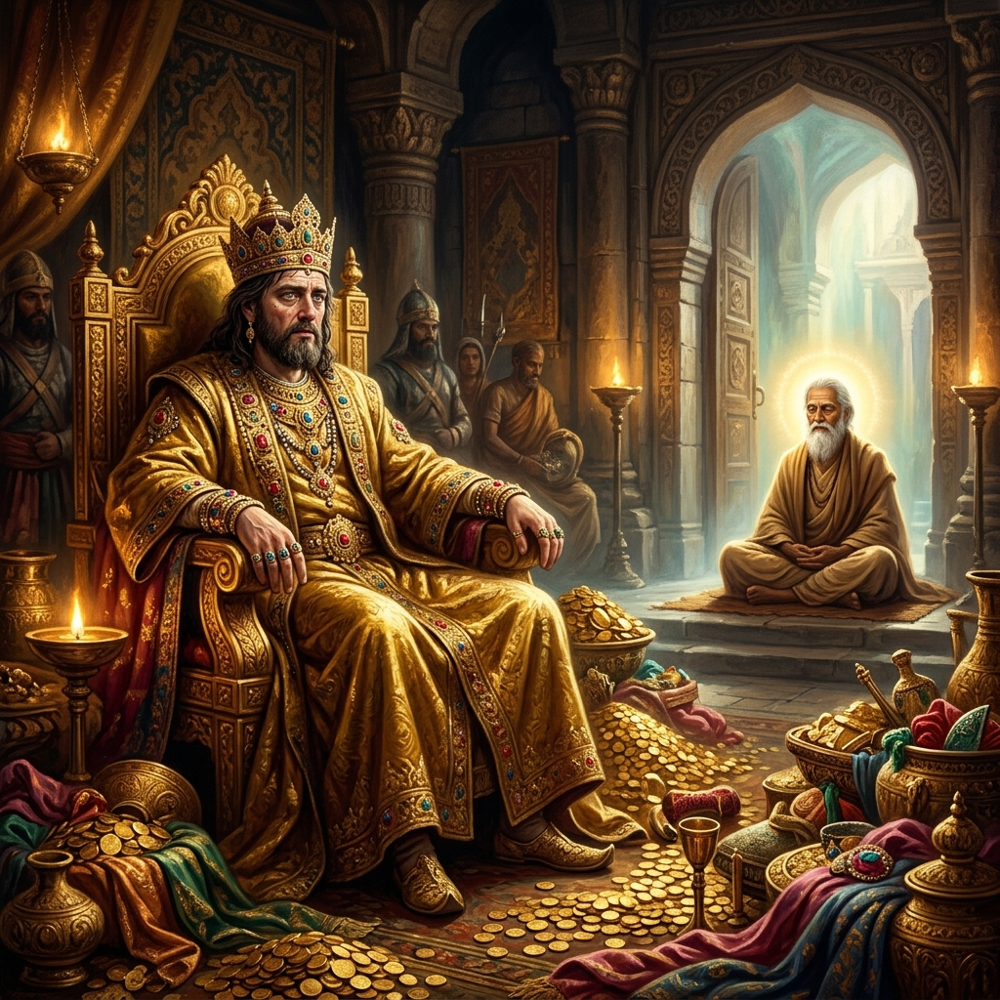
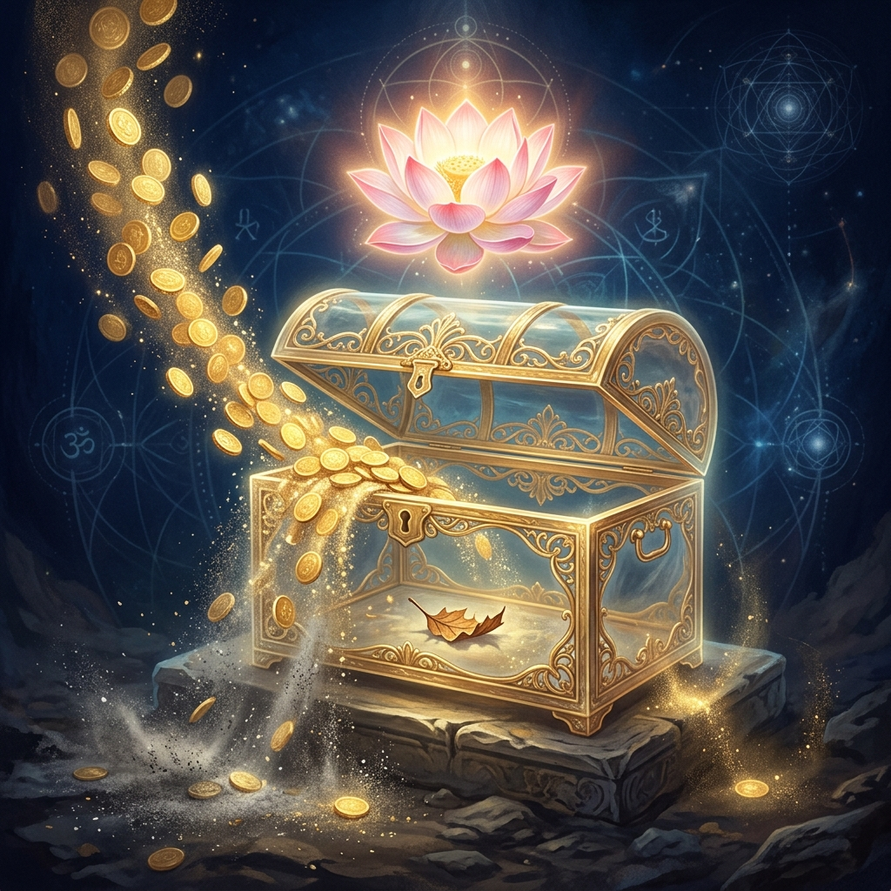
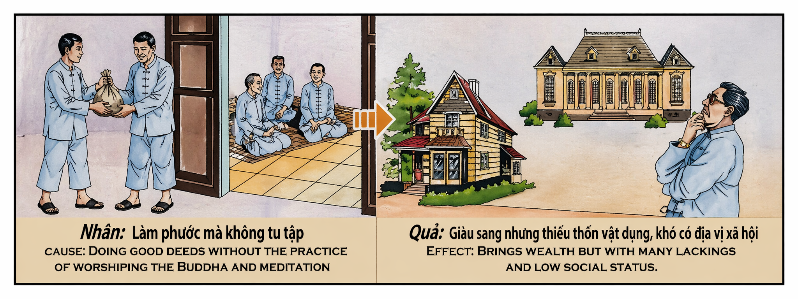

La Prosperidad sin Espíritu Prosperity without Spirit Prosperità senza Spirito 没有灵魂的繁荣 الازدهار بلا روح Процветание без духа Wohlstand ohne Geist La Prospérité sans Esprit 精神なき繁栄 Prosperidade sem Espírito Sự Thịnh Vượng Thiếu Vắng Tâm Linh
"Hacer el bien es la semilla de la riqueza, pero solo el cultivo espiritual es el agua que la hace dulce." "Doing good is the seed of wealth, but only spiritual cultivation is the water that makes it sweet." "Fare del bene è il seme della ricchezza, ma solo la coltivazione spirituale è l'acqua che la rende dolce." “行善是财富的种子，但唯有灵修是使其甘甜的泉水。” "فعل الخير هو بذور الثروة، لكن الممارسة الروحية وحدها هي الماء الذي يجعلها حلوة." «Делать добро — это семя богатства, но только духовное развитие — это вода, которая делает его сладким». „Gutes zu tun ist der Samen des Reichtums, aber nur spirituelle Kultivierung ist das Wasser, das ihn süß macht.“ « Faire le bien est la semence de la richesse, mais seule la culture spirituelle est l'eau qui la rend douce. » 「善行を積むことは富の種ですが、精神的な耕しだけがその富を甘くする水なのです。」 "Fazer o bem é a semente da riqueza, mas apenas o cultivo espiritual é a água que a torna doce." "Làm việc thiện là hạt giống của sự giàu sang, nhưng chỉ có sự tu tập mới là dòng nước khiến nó trở nên ngọt ngào."
El universo no solo mide el peso de lo que entregamos, sino la pureza del recipiente que lo ofrece. Muchos creen que el karma es una simple transacción comercial: "Doy oro para recibir oro". Si bien la generosidad material genera, por ley de causa y efecto, prosperidad futura, el estado de nuestra mente durante el acto define la calidad de esa prosperidad. Si damos sin cultivar la conexión con lo divino o sin el silencio de la meditación, estamos alimentando el ego al mismo tiempo que aliviamos la pobreza ajena.
Quien realiza actos de caridad por vanidad, por miedo o por simple hábito, sin una búsqueda espiritual profunda, está sembrando en un suelo poco profundo. El fruto será una riqueza que llegará en la próxima existencia, pero vendrá acompañada de "faltas". Puede que tengas una mansión, pero te sientas extranjero en ella. Puede que tengas sirvientes, pero nadie que te ame de verdad. Puede que poseas todos los objetos del mundo, pero carezcas de la sabiduría para usarlos con elegancia y propósito.
La verdadera práctica espiritual consiste en armonizar la acción externa con la quietud interna. La meditación y la oración actúan como el ancla que impide que la riqueza nos arrastre hacia la superficialidad. Para sanar este karma, debemos empezar a ver cada acto de dar como una oportunidad de oración silenciosa. No busques solo el mérito que se ve; busca la transformación que no tiene forma. Solo así la riqueza futura será el reflejo de un alma que ya es rica en luz y paz.
The universe measures not only the weight of what we give, but the purity of the vessel that offers it. Many believe that karma is a simple commercial transaction: "I give gold to receive gold." While material generosity generates, by the law of cause and effect, future prosperity, the state of our mind during the act defines the quality of that prosperity. If we give without cultivating a connection with the divine or without the silence of meditation, we are feeding the ego at the same time we alleviate others' poverty.
He who performs acts of charity out of vanity, fear, or simple habit, without a deep spiritual search, is sowing in shallow soil. The fruit will be wealth that arrives in the next existence, but it will come accompanied by "lacking." You may have a mansion but feel like a stranger in it. You may have servants but no one who truly loves you. You may possess all the objects in the world but lack the wisdom to use them with elegance and purpose.
True spiritual practice consists in harmonizing external action with internal stillness. Meditation and prayer act as the anchor that prevents wealth from dragging us toward superficiality. To heal this karma, we must begin to see every act of giving as an opportunity for silent prayer. Do not seek only the merit that is seen; seek the transformation that has no form. Only then will future wealth be the reflection of a soul that is already rich in light and peace.
L'universo non misura solo il peso di ciò che diamo, ma la purezza del recipiente che lo offre. Molti credono che il karma sia una semplice transazione commerciale: "Do oro per ricevere oro". Sebbene la generosità materiale generi, per legge di causa ed effetto, prosperità futura, lo stato della nostra mente durante l'atto definisce la qualità di tale prosperità. Se diamo senza coltivare la connessione con il divino o senza il silenzio della meditazione, stiamo alimentando l'ego mentre alleviamo la povertà altrui.
Chi compie atti di carità per vanità, per paura o per semplice abitudine, senza una profonda ricerca spirituale, sta seminando in un terreno poco profondo. Il frutto sarà una ricchezza che arriverà nella prossima esistenza, ma sarà accompagnata da "mancanze". Potresti avere una villa, ma sentirti un estraneo in essa. Potresti avere servitori, ma nessuno che ti ami veramente. Potresti possedere tutti gli oggetti del mondo, ma mancare della saggezza per usarli con eleganza e scopo.
La vera pratica spirituale consiste nell'armonizzare l'azione esterna con la quiete interna. La meditazione e la preghiera agiscono come l'ancora che impedisce alla ricchezza di trascinarci verso la superficialità. Per guarire questo karma, dobbiamo iniziare a vedere ogni atto del donare come un'opportunità di preghiera silenziosa. Non cercare solo il merito che si vede; cerca la trasformazione che non ha forma. Solo così la ricchezza futura sarà il riflesso di un'anima già ricca di luce e pace.
宇宙不仅衡量布施之物的重量，更衡量布施者内心的纯净。许多人认为业力是一场简单的商业交易：“施金得金”。虽然物质上的慷慨依据因果律会带来未来的繁荣，但行善时的心境决定了这种繁荣的品质。如果我们布施时没有培养与神性的连接，没有冥想的宁静，我们在缓解他人贫困的同时，也在滋养自己的傲慢。
如果一个人出于虚荣、恐惧或单纯的习惯而行善，却没有深层的灵性追求，那么他是在浅薄的土地上播种。果实将是下一世到来的财富，但它会伴随着“缺失”。你可能拥有一座豪宅，却在其中感到形同陌路。你可能拥有仆人，却没有人真正爱你。你可能拥有世间万物，却缺乏优雅和有目的地使用它们的智慧。
真正的修持是将外在的行为与内在的宁静相调和。冥想和祈祷就像锚，防止财富将我们拖向浅薄。为了疗愈这种业力，我们必须开始将每一次施舍看作默祷的机会。不要只追求显而易见的功德；要追求无形的转变。只有这样，未来的财富才会是一个早已富有光芒与和平的灵魂的缩影。
الكون لا يقيس فقط وزن ما نقدمه، بل يقيس طهارة الوعاء الذي يقدمه. يعتقد الكثيرون أن الكارما هي مجرد معاملة تجارية: "أعطي ذهباً لأحصل على ذهب". في حين أن الكرم المادي يولد، وفقاً لقانون السبب والنتيجة، ازدهاراً مستقبلياً، فإن حالة عقلنا أثناء العمل هي التي تحدد جودة ذلك الازدهار. إذا أعطينا دون زراعة الاتصال بالإلهي أو دون صمت التأمل، فإننا نغذي الأنا في نفس الوقت الذي نخفف فيه من فقر الآخرين.
من يقوم بأعمال الخير من أجل الغرور أو الخوف أو العادة البسيطة، دون بحث روحي عميق، فإنه يزرع في تربة ضحلة. ستكون الثمرة ثروة تصل في الوجود القادم، لكنها ستأتي مصحوبة بـ "نقص". قد تمتلك قصراً ولكنك تشعر بالغربة فيه. قد يكون لديك خدم ولكن لا أحد يحبك بصدق. قد تمتلك كل أشياء العالم ولكنك تفتقر إلى الحكمة لاستخدامها بأناقة وهدف.
الممارسة الروحية الحقيقية هي التناغم بين العمل الخارجي والسكون الداخلي. التأمل والصلاة يعملان كمرساة تمنع الثروة من جرنا نحو السطحية. لشفاء هذه الكارما، يجب أن نبدأ في رؤية كل فعل عطاء كفرصة للصلاة الصامتة. لا تبحث فقط عن الجدارة التي تُرى؛ ابحث عن التحول الذي ليس له شكل. عندها فقط ستكون الثروة المستقبلية انعكاساً لروح غنية بالفعل بالنور والسلام.
Вселенная измеряет не только вес того, что мы отдаем, но и чистоту сосуда, который это предлагает. Многие верят, что карма — это простая коммерческая сделка: «Даю золото, чтобы получить золото». Хотя материальная щедрость порождает, по закону причины и следствия, будущее процветание, состояние нашего ума во время действия определяет качество этого процветания. Если мы даем без духовной связи или тишины медитации, мы питаем эго, одновременно облегчая чужую бедность.
Тот, кто совершает акты милосердия из тщеславия, страха или простой привычки, без глубокого духовного поиска, сеет в неглубокую почву. Плодом будет богатство, которое придет в следующем существовании, но оно будет сопровождаться «недостатками». У вас может быть поместье, но вы будете чувствовать себя в нем чужим. У вас могут быть слуги, но никто не будет любить вас по-настоящему. Вы можете обладать всеми предметами мира, но вам будет не хватать мудрости, чтобы использовать их с изяществом и целью.
Истинная духовная практика заключается в гармонизации внешнего действия с внутренним покоем. Медитация и молитва действуют как якорь, который не дает богатству утянуть нас в поверхностность. Чтобы исцелить эту карму, мы должны начать рассматривать каждый акт дарения как возможность для безмолвной молитвы. Не ищите только видимых заслуг; ищите трансформацию, не имеющую формы. Только тогда будущее богатство станет отражением души, которая уже богата светом и покоем.
Das Universum misst nicht nur das Gewicht dessen, was wir geben, sondern auch die Reinheit des Gefäßes, das es anbietet. Viele glauben, dass Karma ein einfaches Handelsgeschäft ist: „Ich gebe Gold, um Gold zu erhalten.“ Während materielle Großzügigkeit nach dem Gesetz von Ursache und Wirkung künftigen Wohlstand erzeugt, bestimmt der Zustand unseres Geistes während der Tat die Qualität dieses Wohlstands. Wenn wir geben, ohne die Verbindung zum Göttlichen oder die Stille der Meditation zu pflegen, nähren wir das Ego, während wir gleichzeitig die Armut anderer lindern.
Wer Wohltätigkeit aus Eitelkeit, Angst oder bloßer Gewohnheit übt, ohne eine tiefe spirituelle Suche, sät auf flachem Boden. Die Frucht wird Reichtum sein, der in der nächsten Existenz eintrifft, aber er wird mit „Mängeln“ behaftet sein. Man mag eine Villa besitzen, sich aber darin fremd fühlen. Man mag Diener haben, aber niemanden, der einen wirklich liebt. Man mag alle Gegenstände der Welt besitzen, aber es fehlt die Weisheit, sie mit Eleganz und Sinn zu nutzen.
Wahre spirituelle Praxis besteht darin, äußeres Handeln mit innerer Stille zu harmonisieren. Meditation und Gebet wirken wie der Anker, der verhindert, dass der Reichtum uns in die Oberflächlichkeit zieht. Um dieses Karma zu heilen, müssen wir beginnen, jeden Akt des Gebens als Gelegenheit für ein stilles Gebet zu sehen. Suchen Sie nicht nur das Verdienst, das man sieht; suchen Sie die Verwandlung, die keine Form hat. Nur dann ist künftiger Reichtum das Spiegelbild einer Seele, die bereits reich an Licht und Frieden ist.
L'univers ne mesure pas seulement le poids de ce que nous donnons, mais la pureté du récipient qui l'offre. Beaucoup croient que le karma est une simple transaction commerciale : « Je donne de l'or pour recevoir de l'or ». Bien que la générosité matérielle génère, par la loi de cause à effet, la prospérité future, l'état de notre esprit pendant l'acte en définit la qualité. Si nous donnons sans cultiver la connexion avec le divin ou sans le silence de la méditation, nous nourrissons l'ego tout en soulageant la pauvreté d'autrui.
Celui qui pratique la charité par vanité, par peur ou par simple habitude, sans une recherche spirituelle profonde, sème dans un sol peu profond. Le fruit sera une richesse qui arrivera dans la prochaine existence, mais elle sera accompagnée de « manques ». Vous pourriez avoir un palais mais vous y sentir étranger. Vous pourriez avoir des serviteurs mais personne qui ne vous aime vraiment. Vous pourriez posséder tous les objets du monde mais manquer de la sagesse nécessaire pour les utiliser avec élégance et but.
La vraie pratique spirituelle consiste à harmoniser l'action extérieure avec la quiétude intérieure. La méditation et la prière agissent comme l'ancre qui empêche la richesse de nous entraîner vers la superficialité. Pour guérir ce karma, nous devons commencer à voir chaque acte de don comme une opportunité de prière silencieuse. Ne cherchez pas seulement le mérite que se voit ; cherchez la transformation qui n'a pas de forme. Ce n'est qu'ainsi que la richesse future sera le reflet d'une âme déjà riche de lumière et de paix.
宇宙は、私たちが与えるものの重さだけでなく、それを捧げる器の清らかさをも測っています。多くの人は、カルマを単純な商業取引のように考えています。「金を与えて金を得る」というわけです。物質的な寛大さが因果の法則によって未来の繁栄を生むのは事実ですが、その時の心の状態が繁栄の質を決定します。神性との繋がりや瞑想の静寂なしに与えることは、他者の貧しさを和らげると同時に、自らのエゴを肥やしているのです。
虚栄心や恐れ、あるいは単なる習慣から、深い精神的探求なしに慈善を行う者は、浅い土壌に種をまいています。その果実は次の生で富として現れますが、それは「欠乏」を伴ったものです。大邸宅に住みながらも、そこが自分の居場所ではないように感じるかもしれません。使用人はいても、心から愛してくれる人はいないかもしれません。世の中のあらゆる物を所有していても、それを優雅に、そして目的を持って使う知恵に欠けているかもしれません。
真の精神修行とは、外的な行動と内的な静寂を調和させることです。瞑想と祈りは、富が私たちを浅薄さへと引きずり込むのを防ぐ錨の役割を果たします。このカルマを癒すには、与えるというすべての行為を沈黙の祈りの機会として捉え始める必要があります。目に見える功徳だけを求めるのではなく、形のない変容を求めてください。そうして初めて、未来の富は、すでに光と安らぎに满ちた魂の反映となるのです。
O universo não mede apenas o peso do que entregamos, mas a pureza do recipiente que o oferece. Muitos acreditam que o karma é uma simples transação comercial: "Dou ouro para receber ouro". Embora a generosidade material gere, por ley de causa e efeito, prosperidade futura, o estado da nossa mente durante o ato define a qualidade dessa prosperidade. Se damos sem cultivar a conexão com o divino o sin o silêncio da meditação, estamos alimentando o ego ao mesmo tiempo que aliviamos a pobreza alheia.
Quem realiza actos de caridade por vaidade, por medo ou por simples hábito, sem uma busca espiritual profunda, está semeando em solo raso. O fruto será uma riqueza que chegará na próxima existência, mas virá acompanhada de "faltas". Podes ter uma mansão, mas sentir-te estrangeiro nela. Podes ter servos, mas ninguém que te ame de verdade. Podes possuir todos os objetos do mundo, mas carecer da sabedoria para usá-los com elegância e propósito.
A verdadera prática espiritual consiste em armonizar a ação externa com a quietude interna. A meditação e a oração atuam como a âncora que impede que a riqueza nos arraste para a superficialidade. Para curar este karma, devemos começar a ver cada acto de dar como uma oportunidade de oração silenciosa. Não busques apenas o mérito que se vê; busca a transformação que não tem forma. Só assim a riqueza futura será el reflexo de uma alma que já é rica em luz e paz.
Vũ trụ không chỉ đo lường sức nặng của những gì chúng ta cho đi, mà còn đo lường sự thanh khiết của tâm hồn người trao tặng. Nhiều người tin rằng nhân quả là một giao dịch thương mại đơn giản: "Cho vàng để nhận lại vàng". Mặc dù sự hào phóng về vật chất tạo ra sự thịnh vượng trong tương lai theo luật nhân quả, nhưng trạng thái tâm trí của chúng ta trong lúc hành động sẽ quyết định chất lượng của sự thịnh vượng ấy. Nếu ta cho đi mà không tu tập lòng thành kính hay thiếu vắng sự tĩnh lặng của thiền định, ta đang nuôi dưỡng cái tôi trong khi xoa dịu cái nghèo của người khác.
Kẻ làm từ thiện vì hư danh, vì sợ hãi hay vì thói quen đơn thuần mà không có sự tìm kiếm tâm linh sâu sắc, chính là đang gieo hạt trên nền đất cạn. Quả ngọt sẽ là sự giàu sang trong kiếp sau, nhưng nó sẽ đi kèm với những "thiếu hụt". Bạn có thể có một biệt thự nhưng lại cảm thấy lạc lõng trong đó. Bạn có thể có người hầu kẻ hạ nhưng không có ai thực sự yêu thương mình. Bạn có thể sở hữu vạn vật nhưng lại thiếu trí tuệ để sử dụng chúng một cách tao nhã và có mục đích.
Sự tu tập thực sự là hài hòa giữa hành động bên ngoài và sự tĩnh tại bên trong. Thiền định và cầu nguyện đóng vai trò như chiếc neo ngăn không cho sự giàu sang kéo ta vào sự nông cạn. Để chuyển hóa nghiệp này, chúng ta phải bắt đầu xem mỗi hành động cho đi như một cơ hội để cầu nguyện trong tĩnh lặng. Đừng chỉ tìm kiếm những công đức hữu hình; hãy tìm kiếm sự chuyển hóa vô hình. Chỉ khi đó, sự giàu sang tương lai mới là phản chiếu của một tâm hồn vốn đã giàu ánh sáng và bình an.
El Orfebre de Benarés
The Goldsmith of Varanasi
L'Orefice di Varanasi
瓦拉纳西的金匠
صائغ فاراناسي
Ювелир из Варанаси
Der Goldschmied von Varanasi
L'Orfèvre de Varanasi
ヴァーラーナシーの金細工師
O Ourives de Varanasi
Thợ Kim Hoàn Thành Varanasi
En la antigua ciudad de Benarés, vivía Kavi, un orfebre cuya habilidad con el metal solo era superada por su fama de hombre caritativo. Kavi donaba la décima parte de sus joyas a los templos y alimentaba a cientos de mendigos. Sin embargo, su mente era un mercado ruidoso. Mientras repartía pan, su corazón contaba los elogios; mientras entregaba oro, su mente planeaba su próximo negocio. Nunca se sentó en silencio, nunca buscó la luz divina en su interior, pues decía que "hacer el bien era suficiente oración".
Debido a su inmensa generosidad, Kavi renació siglos después como el Gran Rey de una próspera provincia. Su palacio estaba hecho de mármol y sus arcas rebosaban de tesoros. Pero el karma de su falta de cultivo espiritual le pasó factura. A pesar de su riqueza, el Rey se sentía perpetuamente inquieto. No podía disfrutar de la música, pues no tenía oído interno para la armonía; no encontraba paz en sus jardines, pues su mente seguía siendo el mercado ruidoso de su vida anterior. Sus cortesanos lo obedecían por miedo, pero nadie lo respetaba como un hombre sabio.
Un día, un monje errante entró en la sala del trono. No traía nada más que un cuenco de madera, pero irradiaba una majestad que el Rey, con toda su corona, no poseía. El Rey, irritado por su propia infelicidad, le preguntó: "¿Cómo es que yo, que lo tengo todo, no tengo paz, y tú, que no tienes nada, pareces el dueño del mundo?". El monje respondió: "Majestad, usted construyó un gran palacio, pero olvidó construir una silla donde su alma pudiera sentarse. Dio oro a otros, pero no dio silencio a su propia mente. Su riqueza es un cuerpo sin espíritu".
Esa noche, el Rey lloró frente a sus tesoros, comprendiendo que el oro era una carga si el corazón no era ligero. Desde entonces, comenzó a meditar cada madrugada antes de atender los asuntos del reino. Aprendió que el mayor acto de caridad que uno puede hacerse a sí mismo y al mundo es cultivar un corazón en paz. Solo entonces su riqueza dejó de ser una "falta" y se convirtió en una herramienta sagrada para el bienestar de su pueblo.
In the ancient city of Varanasi, lived Kavi, a goldsmith whose skill with metal was surpassed only by his reputation as a charitable man. Kavi donated a tenth of his jewelry to temples and fed hundreds of beggars. However, his mind was a noisy marketplace. While distributing bread, his heart counted the praises; while delivering gold, his mind planned his next deal. He never sat in silence, never sought the divine light within, for he said that "doing good was enough prayer."
Due to his immense generosity, Kavi was reborn centuries later as the Great King of a prosperous province. His palace was made of marble and his coffers overflowed with treasures. But the karma of his lack of spiritual cultivation took its toll. Despite his wealth, the King felt perpetually restless. He could not enjoy music, for he had no inner ear for harmony; he found no peace in his gardens, for his mind remained the noisy marketplace of his previous life. His courtiers obeyed him out of fear, but no one respected him as a wise man.
One day, a wandering monk entered the throne room. He brought nothing but a wooden bowl, yet he radiated a majesty that the King, with all his crown, did not possess. The King, irritated by his own unhappiness, asked: "How is it that I, who have everything, have no peace, and you, who have nothing, seem like the master of the world?" The monk replied: "Majesty, you built a great palace, but forgot to build a chair where your soul could sit. You gave gold to others, but gave no silence to your own mind. Your wealth is a body without a spirit."
That night, the King wept before his treasures, understanding that gold was a burden if the heart was not light. From then on, he began to meditate every dawn before attending to the affairs of the kingdom. He learned that the greatest act of charity one can do for oneself and the world is to cultivate a heart at peace. Only then did his wealth cease to be a "lacking" and become a sacred tool for his people's well-being.
Nell'antica città di Varanasi viveva Kavi, un orefice la cui abilità con il metallo era superata solo dalla sua fama di uomo caritatevole. Kavi donava la decima parte dei suoi gioielli ai templi e nutriva centinaia di mendicanti. Tuttavia, la sua mente era un mercato rumoroso. Mentre distribuiva il pane, il suo cuore contava le lodi; mentre consegnava l'oro, la sua mente pianificava il suo prossimo affare. Non sedeva mai in silenzio, non cercava mai la luce divina dentro di sé, perché diceva che "fare il bene era una preghiera sufficiente".
A causa della sua immensa generosità, Kavi rinacque secoli dopo come il Grande Re di una prospera provincia. Il suo palazzo era fatto di marmo e i suoi forzieri traboccavano di tesori. Ma il karma della sua mancanza di coltivazione spirituale riscosse il suo debito. Nonostante la sua ricchezza, il Re si sentiva perennemente inquieto. Non riusciva a godere della musica, poiché non aveva un orecchio interno per l'armonia; non trovava pace nei suoi giardini, poiché la sua mente rimaneva il mercato rumoroso della sua vita precedente. I suoi cortigiani lo ubbidivano per paura, ma nessuno lo rispettava come un uomo saggio.
Un giorno, un monaco errante entrò nella sala del trono. Non portava altro che una ciotola di legno, ma irradiava una maestà che il Re, con tutta la sua corona, non possedeva. Il Re, irritato dalla propria infelicità, gli chiese: "Com'è possibile che io, che ho tutto, non abbia pace, e tu, que non hai nulla, sembri il padrone del mondo?". Il monaco rispose: "Maestà, lei ha costruito un grande palazzo, ma ha dimenticato di costruire una sedia dove la sua anima potesse sedersi. Ha dato l'oro agli altri, ma non ha dato il silenzio alla sua mente. La sua ricchezza è un corpo senza spirito".
Quella notte, il Re pianse davanti ai suoi tesori, comprendendo che l'oro era un peso se il cuore era leggero. Da allora, iniziò a meditare ogni mattina prima di occuparsi degli affari del regno. Imparò che il più grande atto di carità che si possa fare a se stessi e al mondo è coltivare un cuore in pace. Solo allora la sua ricchezza smise di essere una "mancanza" e divenne uno strumento sacro per il benessere del suo popolo.
在古老的瓦拉纳西城，住着一个名叫卡维的金匠，他对金属的处理技巧仅次于他乐善好施的名声。卡维将珠宝的十分之一捐给寺庙，并救济数百名乞丐。然而，他的内心却像一个喧闹的市场。在分发面包时，他在心里盘算着赞美；在交付黄金时，他的脑子里计划着下一笔生意。他从未静坐，也从未寻求内在的神圣光芒，因为他说“行善就是充分的祈祷”。
由于他巨大的慷慨，几个世纪后卡维转世为一个繁荣省份的大国王。他的宫殿是大理石建造的，金库里堆满了宝藏。但他缺乏灵性修持的业力让他付出了代价。尽管富有，国王却感到永无止境的焦虑。他无法享受音乐，因为他没有内在的和谐之耳；他在花园里找不到平静，因为他的内心依然是前世那个喧闹的市场。他的朝臣因恐惧而服从他，但没有人像尊重智者那样尊重他。
一天，一位云游僧走进大殿。他除了一个木碗外什么也没带，但他散发出的威严感是戴着皇冠的国王所不具备的。国王因自己的不幸而恼火，问道：“为什么我拥有一切却得不到平静，而你一无所有，却看起来像世界的主人？”僧侣回答说：“陛下，您建造了一座宏伟的宫殿，却忘了建造一把让您的灵魂可以安坐的椅子。您把黄金给了别人，却没把宁静留给自己的心。您的财富是缺乏灵魂的肉体。”
那天晚上，国王在宝藏前痛哭流涕，明白如果心不轻盈，黄金就是负担。从那时起，他开始在每天清晨处理政务前进行冥想。他明白，一个人对自己和世界所能做的最大的慈善，就是培养一颗宁静的心。只有在那时，他的财富才不再是“缺失”，而成为了造福百姓的神圣工具。
في مدينة فاراناسي القديمة، عاش كافي، وهو صائغ ذهب كانت مهارته في التعامل مع المعادن لا يفوقها إلا شهرته كرجل خير. تبرع كافي بعشر مجوهراته للمعابد وأطعم مئات المتسولين. ومع ذلك، كان عقله سوقاً صاخبة. وبينما كان يوزع الخبز، كان قلبه يحصي المديح؛ وبينما كان يسلم الذهب، كان عقله يخطط لعمله التالي. لم يجلس أبداً في صمت، ولم يبحث أبداً عن النور الإلهي في داخله، لأنه قال إن "فعل الخير هو صلاة كافية".
وبسبب كرمه الهائل، ولد كافي من جديد بعد قرون كملك عظيم لمقاطعة مزدهرة. كان قصره مبنياً من الرخام وخزائنه تفيض بالكنوز. لكن كارما افتقاره للزراعة الروحية أثرت عليه. وعلى الرغم من ثروته، كان الملك يشعر بقلق دائم. لم يكن يستطيع الاستمتاع بالموسيقى، لأنه لم يكن لديه أذن داخلية للتناغم؛ ولم يجد السلام في حدائقه، لأن عقله ظل السوق الصاخبة لحياته السابقة. أطاعه حاشيته بدافع الخوف، لكن لم يحترمه أحد كرجل حكيم.
ذات يوم، دخل راهب متجول إلى قاعة العرش. لم يحمل معه سوى وعاء خشبي، لكنه كان يشع بجلال لم يمتلكه الملك بكل تاجه. سأله الملك، الذي كان غاضباً من تعاسته: "كيف يمكنني أنا، الذي أملك كل شيء، ألا أحصل على السلام، وأنت، الذي لا تملك شيئاً، تبدو وكأنك سيد العالم؟" فأجاب الراهب: "يا صاحب الجلالة، لقد بنيت قصراً عظيماً، لكنك نسيت أن تبني كرسياً تجلس عليه روحك. لقد أعطيت الذهب للآخرين، لكنك لم تعطِ الصمت لعقلك. ثروتك هي جسد بلا روح".
في تلك الليلة، بكى الملك أمام كنوزه، مدركاً أن الذهب كان عبئاً إذا لم يكن القلب خفيفاً. ومنذ ذلك الحين، بدأ يتأمل كل فجر قبل الاهتمام بشؤون المملكة. وتعلم أن أعظم عمل خيري يمكن للمرء أن يفعله لنفسه وللعالم هو زراعة قلب ينعم بالسلام. عندها فقط توقفت ثروته عن كونها "نقصاً" وأصبحت أداة مقدسة لرفاهية شعبه.
В древнем городе Варанаси жил Кави, ювелир, чье мастерство в работе с металлом уступало лишь его славе благотворителя. Кави жертвовал десятую часть своих украшений храмам и кормил сотни нищих. Однако его ум был подобен шумному рынку. Раздавая хлеб, его сердце подсчитывало похвалы; вручая золото, его ум планировал следующую сделку. Он никогда не сидел в тишине, никогда не искал божественного света внутри себя, ибо говорил, что «делать добро — это достаточная молитва».
Благодаря своей безмерной щедрости Кави переродился столетия спустя Великим Королем процветающей провинции. Его дворец был построен из мрамора, а сокровищницы ломились от богатств. Но карма отсутствия духовного развития взяла свое. Несмотря на свое богатство, Король чувствовал постоянное беспокойство. Он не мог наслаждаться музыкой, так как у него не было внутреннего слуха для гармонии; он не находил покоя в своих садах, так как его ум оставался шумным рынком его прошлой жизни. Придворные повиновались ему из страха, но никто не уважал его как мудрого человека.
Однажды в тронный зал вошел странствующий монах. У него не было ничего, кроме деревянной чаши, но он излучал такое величие, которым не обладал Король со всей своей короной. Король, раздраженный собственным несчастьем, спросил его: «Как получается, что у меня, имеющего все, нет покоя, а ты, не имеющий ничего, кажешься хозяином мира?» Монах ответил: «Ваше Величество, вы построили великий дворец, но забыли построить стул, на котором могла бы сидеть ваша душа. Вы давали золото другим, но не давали тишины своему собственному уму. Ваше богатство — это тело без духа».
В ту ночь Король плакал перед своими сокровищами, понимая, что золото — это бремя, если сердце не легко. С тех пор он начал медитировать на каждом рассвете, прежде чем заниматься делами королевства. Он узнал, что величайший акт милосердия, который можно совершить для себя и мира, — это взрастить сердце, пребывающее в покое. Только тогда его богатство перестало быть «недостатком» и стало священным инструментом для благополучия его народа.
In der antiken Stadt Varanasi lebte Kavi, ein Goldschmied, dessen Geschicklichkeit mit Metall nur von seinem Ruf als wohltätiger Mann übertroffen wurde. Kavi spendete den zehnten Teil seines Schmucks an die Tempel und speiste Hunderte von Bettlern. Doch sein Geist war ein lärmender Marktplatz. Während er Brot verteilte, zählte sein Herz das Lob; während er Gold übergab, plante sein Verstand sein nächstes Geschäft. Er saß nie in der Stille, suchte nie nach dem göttlichen Licht in seinem Inneren, denn er sagte: „Gutes zu tun, ist Gebet genug“.
Aufgrund seiner immensen Großzügigkeit wurde Kavi Jahrhunderte später als der Große König einer blühenden Provinz wiedergeboren. Sein Palast war aus Marmor und seine Schatzkammern quollen über vor Schätzen. Doch das Karma seines Mangels an spiritueller Kultivierung forderte seinen Tribut. Trotz seines Reichtums fühlte sich der König ständig unruhig. Er konnte die Musik nicht genießen, da er kein inneres Gehör für die Harmonie hatte; er fand keinen Frieden in seinen Gärten, da sein Geist der lärmende Marktplatz seines früheren Lebens blieb. Seine Höflinge gehorchten ihm aus Angst, aber niemand respektierte ihn als einen weisen Mann.
Eines Tages trat ein wandernder Mönch in den Thronsaal. Er brachte nichts weiter als eine hölzerne Schale mit sich, doch er strahlte eine Majestät aus, die der König mit seiner ganzen Krone nicht besaß. Der König, verärgert über sein eigenes Unglück, fragte ihn: „Wie kommt es, dass ich, der ich alles habe, keinen Frieden besitze, und du, der du nichts hast, wie der Herr der Welt wirkst?“. Der Mönch antwortete: „Majestät, Sie haben einen großen Palast gebaut, aber Sie haben vergessen, einen Stuhl zu bauen, auf dem Ihre Seele sitzen kann. Sie haben anderen Gold gegeben, aber Sie haben Ihrem eigenen Geist keine Stille gegeben. Ihr Reichtum ist ein Körper ohne Geist“.
In jener Nacht weinte der König vor seinen Schätzen, weil er begriff, dass Gold eine Last war, wenn das Heart nicht leicht war. Von da an begann er jeden Morgen zu meditieren, bevor er sich um die Angelegenheiten des Königreichs kümmerte. Er lernte, dass der größte Akt der Wohltätigkeit, den man sich selbst und der Welt erweisen kann, darin besteht, ein friedvolles Herz zu kultivieren. Erst dann hörte sein Reichtum auf, ein „Mangel“ zu sein, und wurde zu einem heiligen Werkzeug für das Wohlergehen seines Volkes.
Dans l'ancienne cité de Varanasi vivait Kavi, un orfèvre dont l'habileté avec le métal n'avait d'égale que sa renommée d'homme charitable. Kavi faisait don du dixième de ses bijoux aux temples et nourrissait des centaines de mendiants. Cependant, son esprit était un marché bruyant. Tandis qu'il distribuait le pain, son cœur comptait les éloges ; tandis qu'il livrait l'or, son esprit planifiait sa prochaine affaire. Jamais il ne s'asseyait en silence, jamais il ne cherchait la lumière divine en lui-même, car il disait que « faire le bien était une prière suffisante ».
En raison de son immense générosité, Kavi renaquit des siècles plus tard comme le Grand Roi d'une province prospère. Son palais était de marbre et ses coffres débordaient de trésors. Mais le karma de son manque de culture spirituelle finit par le rattraper. Malgré sa richesse, le Roi se sentait perpétuellement inquiet. Il ne pouvait apprécier la musique, car il n'avait pas d'oreille interne pour l'harmonie ; il ne trouvait pas la paix dans ses jardins, car son esprit demeurait le marché bruyant de sa vie antérieure. Ses courtisans lui obéissaient par peur, mais personne ne le respectait comme un homme sage.
Un jour, un moine errant entra dans la salle du trône. Il n'apportait rien d'autre qu'un bol de bois, mais il rayonnait d'une majesté que le Roi, malgré sa couronne, ne possédait pas. Le Roi, irrité par son propre malheur, lui demanda : « Comment se fait-il que moi, qui ai tout, je n'aie pas de paix, et toi, qui n'as rien, sembles être le maître du monde ? ». Le moine répondit : « Majesté, vous avez bâti un grand palais, mais vous avez oublié de construire un siège où votre âme puisse s'asseoir. Vous avez donné de l'or aux autres, mais vous n'avez pas donné de silence à votre propre esprit. Votre richesse est un corps sans esprit ».
Cette nuit-là, le Roi pleura devant ses trésors, comprenant que l'or était un fardeau si le cœur n'était pas léger. Dès lors, il commença à méditer chaque matin à l'aube avant de s'occuper des affaires du royaume. Il apprit que le plus grand acte de charité que l'on puisse se faire à soi-même et au monde est de cultiver un cœur en paix. C'est alors seulement que sa richesse cessa d'être un « manque » et devint un outil sacré pour le bien-être de son peuple.
古代ヴァーラーナシーの街に、カヴィという金細工師が住んでいました。彼の金属細工の技術は、慈善家としての名声に勝るとも劣らないものでした。カヴィは宝石の10分の1を寺院に寄付し、何百人もの物乞いに食事を与えていました。しかし、彼の心は騒がしい市場のようでした。パンを配りながら、心の中では称賛の言葉を数え、金を手渡しながら、頭の中では次の商売の計画を立てていました。彼は決して静かに座ることはなく、内なる神聖な光を探すこともありませんでした。「善行を積むことこそが十分な祈りだ」と言っていたからです。
その計り知れない寛大さにより、カヴィは何世紀も後に繁栄した州の偉大な王として転生しました。彼の宮殿は大理石で造られ、宝物庫には財宝が溢れていました。しかし、精神的な耕しを怠ったカルマが彼にツケを回しました。富んでいるにもかかわらず、王は絶えず落ち着かない気分でした。調和を感じ取る内なる耳を持たなかったため、音楽を楽しむことができず、心が前世の騒がしい市場のままであったため、庭園でも安らぎを見つけることができませんでした。廷臣たちは恐れから彼に従っていましたが、彼を賢者として尊敬する者は誰もいませんでした。
ある日、一人の放浪僧が玉座の間に現れました。彼は木製の鉢以外に何も持っていませんでしたが、王冠を戴く王が持っていない威厳を放っていました。王は自らの不幸に苛立ち、彼に尋ねました。「すべてを持つ私が安らぎを持たず、何も持たないお前が世界の主のように見えるのはなぜだ？」僧侶は答えました。「陛下、あなたは立派な宮殿を建てましたが、あなたの魂が座る椅子を造るのを忘れました。他人に金を与えましたが、自分の心に静寂を与えませんでした。あなたの富は、精神のない肉体です」。
その夜、王は宝財の前で涙を流し、心が軽くなければ金は重荷であることを悟りました。それ以来、彼は王国の公務に携わる前の毎朝、瞑想を始めました。自分自身と世界に対してできる最大の慈善は、安らかな心を育むことであると学びました。その時初めて、彼の富は「欠乏」ではなくなり、民の幸福のための聖なる道具となったのです。
Na antiga cidade de Varanasi, vivia Kavi, um ourives cuja habilidade con el metal só era superada pela sua fama de homem caridoso. Kavi doava a décima parte das suas joias aos templos e alimentava centenas de mendigos. No entanto, a sua mente era um mercado barulhento. Enquanto distribuía pão, o seu coração contava os elogios; enquanto entregava ouro, a sua mente planeava o seu próximo negócio. Nunca se sentou em silêncio, nunca buscó a luz divina no seu interior, pois dizia que "fazer o bien era oração suficiente".
Devido à sua imensa generosidade, Kavi renasceu séculos después como o Grande Rei de uma próspera província. O seu palácio era feito de mármore e as suas arcas transbordavam de tesouros. Mas o karma da sua falta de cultivo espiritual cobrou o seu preço. Apesar da sua riqueza, el Rei sentia-se perpetuamente inquieto. Não conseguia desfrutar da música, pois não tinha ouvido interno para a harmonia; não encontrava paz nos seus jardins, pois a sua mente continuava a ser el mercado barulhento da sua vida anterior. Os seus cortesãos obedeciam-lhe por medo, mas ninguém o respeitava como um homem sábio.
Um día, um monge errante entrou na sala do trono. Não trazia nada mais do que uma tigela de madeira, mas irradiava uma majestade que el Rei, com toda a sua coroa, não possuía. O Rei, irritado con a sua própria infelicidade, perguntou-lhe: "Como é que eu, que tenho tudo, não tenho paz, e tu, que não tens nada, pareces o dono do mundo?". El monge respondeu: "Majestade, o senhor construiu um grande palácio, mas esqueceu-se de construir uma cadeira onde a sua alma pudesse sentar-se. Deu ouro a outros, mas não deu silêncio à sua própria mente. A sua riqueza é um corpo sem espírito".
Nessa noite, el Rei chorou perante os seus tesouros, compreendendo que o ouro era um fardo se o coração não fosse leve. Desde então, começou a meditar em cada madrugada antes de atender aos assuntos do reino. Aprendeu que o maior ato de caridade que alguém pode fazer a si mesmo e ao mundo é cultivar um coração em paz. Só então a sua riqueza deixou de ser uma "falta" e tornou-se uma ferramenta sagrada para o bem-estar do seu povo.
Tại thành phố Varanasi cổ kính, có một người thợ kim hoàn tên là Kavi, kỹ năng chế tác kim loại của ông chỉ đứng sau danh tiếng về lòng bác ái. Kavi thường quyên góp một phần mười số trang sức của mình cho các ngôi đền và nuôi dưỡng hàng trăm người ăn xin. Tuy nhiên, tâm trí ông lại giống như một khu chợ ồn ào. Trong khi phân phát bánh mì, trái tim ông lại thầm đếm những lời khen ngợi; trong khi trao vàng, tâm trí ông lại toan tính cho vụ làm ăn tiếp theo. Ông chưa bao giờ ngồi trong tĩnh lặng, chưa bao giờ tìm kiếm ánh sáng thần thánh bên trong mình, vì ông cho rằng "làm việc thiện đã là một lời cầu nguyện đủ rồi".
Nhờ lòng hào phóng bao la, Kavi đã tái sinh nhiều thế kỷ sau đó thành một vị Đại Vương của một vương quốc thịnh vượng. Cung điện của ông được xây bằng đá cẩm thạch và ngân khố luôn đầy ắp kho báu. Thế nhưng, nghiệp quả từ việc thiếu tu tập tâm linh đã khiến ông phải trả giá. Bất chấp sự giàu sang, nhà vua luôn cảm thấy bất an không dứt. Ông không thể thưởng thức âm nhạc vì không có đôi tai nội tâm cảm nhận sự hài hòa; ông không tìm thấy sự bình yên trong khu vườn của mình vì tâm trí ông vẫn là khu chợ ồn ào từ kiếp trước. Các cận thần vâng lệnh ông vì sợ hãi, nhưng không ai kính trọng ông như một bậc hiền triết.
Một ngày nọ, một vị tu sĩ hành khất bước vào sảnh ngai vàng. Ông không mang theo gì ngoài một chiếc bát gỗ, nhưng lại tỏa ra một phong thái uy nghi mà nhà vua, dù có đội vương miện, cũng không có được. Nhà vua, bực bội vì nỗi bất hạnh của chính mình, đã hỏi: "Tại sao ta, người có tất cả, lại không có bình yên, còn ngươi, kẻ không có gì, lại trông như chủ nhân của thế gian?" Vị tu sĩ trả lời: "Tâu bệ hạ, ngài đã xây một cung điện lớn, nhưng lại quên xây một chiếc ghế để linh hồn ngài có thể ngồi xuống. Ngài đã cho vàng cho người khác, nhưng không cho sự tĩnh lặng cho tâm trí mình. Sự giàu sang của ngài là một cơ thể thiếu vắng linh hồn."
Đêm đó, nhà vua đã khóc trước những kho báu của mình, hiểu rằng vàng bạc sẽ là gánh nặng nếu trái tim không nhẹ nhàng. Từ đó, ông bắt đầu hành thiền vào mỗi buổi bình minh trước khi lo việc triều chính. Ông học được rằng hành động từ thiện lớn nhất mà một người có thể dành cho chính mình và thế giới là nuôi dưỡng một trái tim bình an. Chỉ khi đó, sự giàu sang của ông mới không còn là một "thiếu hụt" mà trở thành một công cụ thiêng liêng vì hạnh phúc của thần dân.

La Inspiración Original
The Original Inspiration

🇻🇳 Tiếng Việt:
Nhân: Làm phước mà không tu tập.
Quả: Giàu sang nhưng thiếu thốn vật dụng, khó có địa vị xã hội.
🇬🇧 English:
Cause: Doing good deeds without the practice of worshiping the Buddha and meditation.
Effect: Brings wealth but with many lackings and low social status.
Traducción Recreada:
Causa: Hacer el bien y caridad sin realizar cultivo espiritual (meditación o devoción).
Efecto: Prosperidad material pero con carencias fundamentales y falta de respeto social.
Si quieres conocer más sobre el proyecto o colaborar, accede a nuestro Linktree.